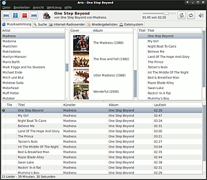

Ario
Dieser Artikel wurde für die folgenden Ubuntu-Versionen getestet:
Ubuntu 14.04 Trusty Tahr
Zum Verständnis dieses Artikels sind folgende Seiten hilfreich:
Ario  ist ein Audio-Player Client, der volle Unterstützung für den Music Player Daemon und experimentelle Unterstützung für XMMS2 mitbringt. Die GTK+-Oberfläche wurde von Rhythmbox inspiriert, zielt aber darauf ab, Ressourcen-schonender und schneller zu sein.
ist ein Audio-Player Client, der volle Unterstützung für den Music Player Daemon und experimentelle Unterstützung für XMMS2 mitbringt. Die GTK+-Oberfläche wurde von Rhythmbox inspiriert, zielt aber darauf ab, Ressourcen-schonender und schneller zu sein.
Ario bietet, sofern die Einstellungen des MPD-Server dies zulassen, vollen Zugriff auf alle über einen Client steuerbaren Funktionen und eine gute Such-Funktion für die Datenbank. Darüber hinaus sind zusätzliche Funktionen vorhanden, die man bei einem modernen Audio-Player erwartet, wie Unterstützung von Internetradio-Stationen und Cover-Anzeige, sowie weitere Plugins. Im Gegensatz zu vielen kompakten Alternativen ist Ario ein mächtiger und funktionsreicher Audio-Player-Client.

Installation¶
Folgendes Paket muss installiert werden[1]:
ario (universe)
 mit apturl
mit apturl
Paketliste zum Kopieren:
sudo apt-get install ario
sudo aptitude install ario
Das Programm kann unter Gnome nun über einen Menü-Eintrag gestartet werden:
"Anwendungen -> Unterhaltungsmedien -> Ario" (GNOME)
"Anwendungen -> Multimedia -> Ario" (Xfce)
Um eine neuere oder angepasste Version zu installieren, müssen das Programm und ggf. zusätzliche Abhängigkeiten selbst kompiliert werden. Auch für die experimentelle Unterstützung von XMMS muss das Programm mit entspechendem Parameter selbst kompiliert werden. Dies ist im Artikel Ario/Kompilieren beschrieben.
Einrichtung¶
Als erste Schritte werden die Verbindung zum Server, die De-/Aktivierung von Erweiterungen und die Einrichtung der Cover-Anzeige über die folgenden Einträge in der Menüleiste von Ario beschrieben.
Unter "Bearbeiten -> Einstellungen" können eine Vielzahl weiterer Einstellungen vorgenommen werden, die man zur Einrichtung einmal vollständig durchgehen kann. Die gute Übersetzung erleichtert dies sicherlich.
Verbindung¶
Unter "Bearbeiten -> Einstellungen" werden im Reiter "Verbindungen" die Verbindungsdaten des MPD-Server eingetragen. Dabei können für mehrere Verbindungen Profile angelegt werden.
Erweiterungen¶
Unter "Bearbeiten -> Erweiterungen" können die folgenden Erweiterungen de-/aktiviert werden:
"Dateisystem-Browser" - dient zum Durchsuchen der MPD-Bibliothek in der Verzeichnis-Struktur
"Internet-Radiosender" - die voreingestellte Liste kann erweitert werden, beispielsweise im Wiki findet man Internetradio-Stationen
"LastFM" - der sogenannte Audioscrobbler ist im Artikel LastFM beschrieben
"Libnotify" - ein Benachrichtigungsfeld mit Titel-Anzeige
"Multimediatasten" - Unterstützung für die Multimediatasten moderner Tastaturen
"Titelinformationen" - zusätzliche Informationen zum abgespielten Titel werden in einem eigenen Reiter angezeigt
"Wikipedia" - weitere Informationen zum Künstler werden aus der Wikipedia geladen
Cover¶
Unter "Bearbeiten -> Einstellungen" im Reiter "Cover" legt man die Quellen für Alben-Cover fest. Über "Werkzeug -> Albumcover herunterladen" lädt man dann die Alben-Cover der Sammlung herunter oder ergänzt die bereits vorhandenen Cover. Ein einzelnes Cover ändert man über "Werkzeug -> Aktuelles Albumcover ändern".
Bedienung¶
| Tastatur-Kürzel | |
| Tasten | Aktion |
| Strg + C | Mit dem MPD-Server verbinden |
| Strg + D | Verbindung trennen |
| Strg + U | Bibliothek aktualisieren |
| Strg + S | Abspielliste speichern |
| Strg + X | Abspielliste zuschneiden |
| Strg + F | Abspielliste durchsuchen (filtern) |
| Strg + L | Zum laufenden Lied springen |
| Strg + Q | Ario beenden |
Unterhalb der Menüleiste befindet sich eine Werkzeugleiste mit den üblichen Bedien-Elementen eines Audio-Players auf der linken Seite. Daneben wird der laufende Titel mit Album angezeigt. Auf der rechten Seite befindet sich eine Zeitleiste, über die man auch im Titel vor- und zurückspringen kann. Es folgen die Schaltflächen für "Zufällige Wiedergabe an/aus" und "Wiederholung an/aus" und zuletzt die Lautstärke-Regelung.
Unter der Werkzeugleiste ist eine Leiste mit Reitern, in denen je nach eigener Einstellung die Musiksammlung, die Suchmaske, die Dateisystem-Ansicht und weitere Ansichten verfügbar sind.
Anzahl und Inhalt der Fenster in der Ansicht der Musiksammlung können eingestellt werden. Titel kann man per drag & drop von der Musiksammlung in den oberen Fenstern in das untere Fenster mit der Abspielliste verschieben.
In der Such-Maske kann die Musiksammlung nach ID-Tags und Dateinamen durchsucht werden. Die Ergebnisse werden im rechten Fenster angezeigt; im unteren ist die aktuelle Abspielliste.
Über "Bearbeiten -> Playliste durchsuchen" kann die aktuelle Wiedergabeliste durchsucht werden. Dazu erscheint am unteren Bildrand eine Eingabezeile.
 Übersichtsartikel
Übersichtsartikel- Erstellt mit Inyoka
-
 2004 – 2017 ubuntuusers.de • Einige Rechte vorbehalten
2004 – 2017 ubuntuusers.de • Einige Rechte vorbehalten
Lizenz • Kontakt • Datenschutz • Impressum • Serverstatus -
Serverhousing gespendet von